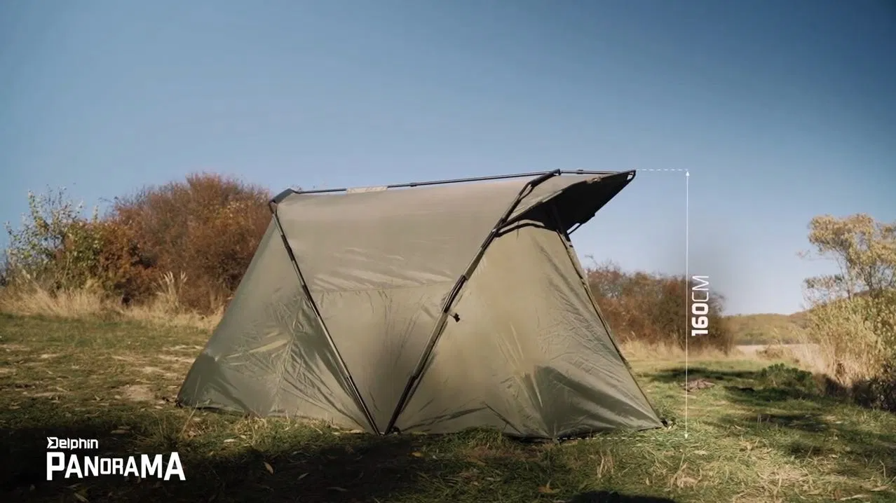
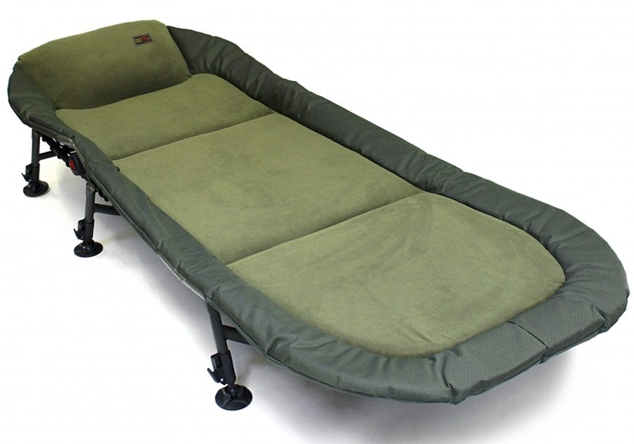
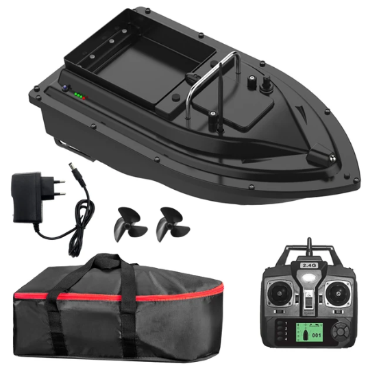

Na této stránce bude vypsána moje výbava na ryby, kterou používám při určitém typu rybolovu.
Každý název je proklik na daný produkt
Rybářské pruty
Kaprařské pruty:
Delphin Prut Etna E3 360cm 3,25lb 2díl
Delphin Prut Etna E3 360cm 3,25lb 2díl
Delphin Prut Etna E3 360cm 3,25lb 2díl
Jedná se o 3,6 m dlouhé kaprařské pruty, které jsou z lehkého materiálu a velice odolné, chytl jsem na ně většinu ryb, které jsou zmíněny například ZDE.
Feederové pruty:
Delphin Prut Magma M3 Medium feeder 360cm 120g - Je to můj první feederový prut, který mi pořídil táta před sedmi lety.
Giants fishing Prut LXR Feeder 12ft 50-100g - Tento prut jsem vyhrál na závodech, zatím jsem s ním chytal jednou, takže nemohu posoudit, ale první dojmy z něj jsou dobré.
Pruty na plavanou:
Delphin BANG 240cm / 10-30g - Tento prut jsem také vyhrál, je skvělý v tom, jak je malý, lehký a zároveň pružný a odolný, chytám s ním ve špatně přístupných místech.
Milo Monarch Bolo 3m - Tento prut je jeden z mých prvních, byl jsem s ním spokojen, než jsem si pořídil právě Delphin BANG.
Prut na přívlač:
Delphin BANG 240cm / 10-30g
Prut na sumce:
Delphin Prut Etna E3 360cm 3,25lb 2díl
Rybářské navijáky
Kaprařské navijáky:
FOX EOS 10000FD
FOX EOS 10000FD
FOX EOS 10000FD
Menší naviják s velkou kapacitou cívky, lehký, ale velice odolný, má hladký chod a kvalitní brzdu.
Feederové navijáky:
Shimano Catana 4000 RC - Tento naviják jsem dostal právě k Delphin Magma M3 Medium, je to levný, ale kvalitní naviják.
SPRO Dassault XR - Tohle je jeden z nejlepších a zároveň nejhezčích navijáků co mám, takže si jej občas prohodím třeba na plavanou.
Navijáky na plavanou:
Shimano Catana 4000 RC
Naviják na přívlač:
Delphin Hornet 50 / 3+1 - Tento naviják jsem vyhrál na závodech, není příliš kvalitní, takže jej téměř nepoužívám a raději si na prut dám třeba SPRO Dassault XR.
Naviják na sumce:
FOX EOS 10000FD
Ostatní
Bivak:
Delphin Panorama Eazy - Prostorný nepromokavý bivak z kvalitního materiálu pro 2-3 lidi.
Hlásiče:
Carp Spirit CS Set hlásičů 3x CSC 3 + 1x Receiver - Voděodolné hlásiče s dlouhým signálem pro příposlech.
Židle:
Křeslo Mivardi Premium - Levné, celkem pohodlné křeslo na pár hodin sezení, nastavitelné nožičky.
Lehátko:
Lehátko Zfish Deluxe RCL Bedchair - Kvalitní, pohodlné lehátko, které je dobře izolované zespodu, tudíž na vás nejde zespodu zima, nastavitelné nožičky.
Zavážecí lodička:
D16B GPS Fishing Bait Boat - 10000mAh - Levná, řekl bych i kvalitní zavážecí lodička, lze nastavit 4 GPS pozice, možnost 2 kg vyvážky.
Podběrák:
Podběrák Giants Fishing Deluxe Landing Net Rubber 85x75cm - Levný, kvalitní podběrák s hodně velkou sítí.